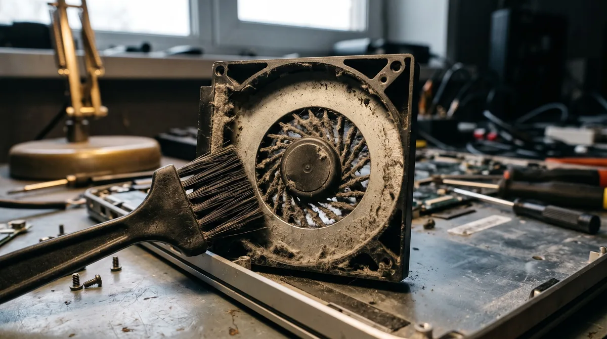
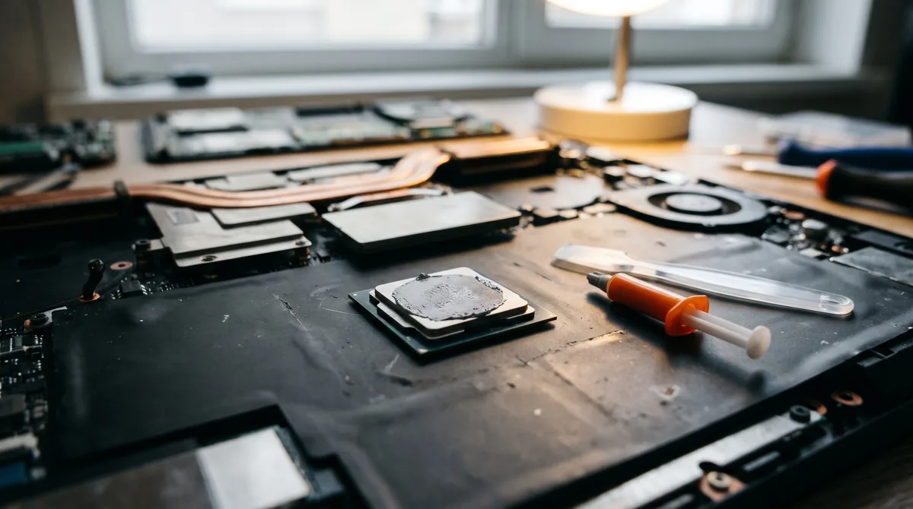

Чистка ноутбука от пыли и замена термопасты: когда нужна и как проходит
Ноутбук гудит, как фен, даже когда открыт один браузер. Корпус над клавиатурой такой горячий, что неприятно держать руки. В играх или при работе с видео он тормозит, а иногда просто выключается. В девяти случаях из десяти дело не в поломке. Устройство забито пылью, и оно перегревается.
Это лечится чисткой ноутбука от мусора и заменой термопасты. Процедура плановая, как замена масла в машине: если делать её вовремя, компьютер прослужит долго. Если тянуть, перегрев постепенно добивает видеочип и материнскую плату, и тогда счёт идёт уже не за чистку.
Как понять, что ноутбуку нужна чистка
- Вентилятор шумит сильнее, чем раньше, и почти не затихает.
- Корпус сильно греется снизу и над кнопками.
- Из решётки сбоку или сзади идет слабый, но очень горячий поток воздуха.
- Ноут тормозит под нагрузкой: игра идёт рывками, видео обрабатывается дольше обычного.
- Бук сам выключается или перезагружается во время игры или долгой работы.
- В решётке видно серый налёт.
- Последний раз компьютер чистили больше двух лет назад или никогда.
Температуру можно проверить бесплатной программой: HWMonitor, HWiNFO или Core Temp. В простое процессор обычно держит 40–55 °C. Под нагрузкой 80–90 °C для многих нормально. Если температура подходит к 95–100 °C, CPU начинает сбрасывать частоту, чтобы не сгореть. Отсюда и тормоза. Если ноут выходит на такие цифры при простых задачах, пора чистить.

Почему ноутбук забивается
Вентилятор втягивает воздух и гонит его через радиатор. Это блок тонких медных пластин с зазорами меньше миллиметра. Пыль, шерсть и ворс оседают на входе и со временем сбиваются в плотный войлок. Он закрывает радиатор целиком, как фильтр, который никто не менял. Вентилятор крутится на полную, а горячий воздух выйти не может.
Особенно быстро это происходит, если ноут стоит на диване, кровати или ковре, если дома есть кошка или собака и если на ноуте много играют.
Вторая причина — термопаста. Это слой между процессором и радиатором, который передаёт тепло. Через два-три года она высыхает и трескается, тепло передаётся хуже, и на чистом радиаторе происходит перегрев.
Что входит в процедуру
Профессиональная очистка — это полная разборка до системы охлаждения. Порядок примерно такой:
- Разборка. Снимаем нижнюю крышку. На многих моделях этого мало, и нужно снять клавиатуру или вынуть материнку.
- Отключение аккумулятора. Делаем это сразу, чтобы ничего не замкнуть.
- Снятие системы охлаждения. Откручиваем радиатор с вентилятором.
- Очистка вентилятора. Убираем войлок, продуваем пластины, чистим лопасти. При необходимости смазываем подшипник.
- Замена пасты на процессоре и видеочипе. Старую удаляем полностью, новую наносим тонким ровным слоем.
- Проверка термопрокладок. Это мягкие резиновые пластины на видеопамяти и элементах питания. Если они порвались или рассохлись, меняем.
- Сборка и проверка. Запускаем ноут под нагрузкой и смотрим температуру до и после.
После нормальной очистки устройство обычно заметно тише, а температура под нагрузкой падает на 10–20 градусов. Насколько именно, зависит от того, насколько он был забит.
Чистка клавиатуры
Её делаем вместе с основной очисткой или отдельно. Крошки и мусор под клавишами можно частично убрать и самому: выключить компьютер, перевернуть кнопками вниз, легко постучать по корпусу и пройтись мягкой кисточкой между клавишами.
Если кнопки залипают после пролитого чая или колы, кисточка не поможет: сладкая жидкость засохла под кнопками и на плёнке. Тут нужна разборка. На многих современных моделях клавиатура приклёпана к верхней части корпуса, поэтому иногда честнее заменить её, чем долго отмывать.
Почему пылесос и баллончик не помогают
Это самый частый вопрос. Короткий ответ: войлок лежит между вентилятором и радиатором, внутри корпуса. Снаружи до него не достать.
- Баллончик со сжатым воздухом. Если дуть в решётку снаружи, пыль уходит не наружу, а глубже, и прессуется ещё плотнее. Иногда после такого «продува» ноутбук греется сильнее.
- Пылесос. Он вытянет мусор с поверхности решётки, но не войлок. Зато раскрутит вентилятор быстрее, чем тот рассчитан, и может разбить подшипник. Кроме того, щётка пылесоса накапливает статический заряд — для схемы это лишний риск.
- Программы «для чистки ноутбука». Они очищают диск от ненужных файлов, а мусор не трогают. Если ноут тормозит из-за перегрева, никакая программа не поможет. Если же он тормозит из-за системы, это отдельная работа: мы делаем и её — переустановку, настройку, замену жёсткого диска на SSD.
Снаружи без вреда можно только аккуратно протереть решётки и следить, чтобы компьютер стоял на твёрдой ровной поверхности.
Как часто надо чистить?
| Как используется компьютер | Как часто чистить |
|---|---|
| Офис, учёба, компьютер стоит на столе | раз в 1,5–2 года |
| Дома есть животные, устройство стоит на диване или кровати | раз в год |
| Игры, монтаж, долгая нагрузка | раз в год, а то и чаще |
| Девайс шумит и греется прямо сейчас | сейчас, не дожидаясь срока |
Если ноут ни разу не чистили, а ему больше двух лет, почти наверняка пора.
Чистка игрового ноутбука
Игровые модели — MSI Katana, ASUS TUF и ROG, Lenovo Legion, Acer Nitro, HP Victus, Thunderobot, Ardor и другие — греются сильнее всех. Внутри мощный видеочип, два вентилятора и несколько тепловых трубок. Забиваются они быстрее, а перегреваются серьёзнее.
У них свои особенности:
- термопрокладок больше, и их толщину нужно подбирать точно, иначе радиатор прилегает хуже, чем до очистки;
- на некоторых моделях ASUS ROG с завода стоит жидкий металл вместо термопасты. С ним работают отдельно и осторожно: он проводит ток, и небрежность может стоить материнки;
- разборка дольше, иногда приходится снимать материнку целиком.
Поэтому процедура занимает больше времени и стоит дороже обычной.

Восстановление после залития
Если на девайс пролили чай, кофе, сок или воду:
- Сразу выключите, не дожидаясь, пока система завершит сеанс. Зажмите кнопку питания на несколько секунд.
- Выньте зарядку. Если аккумулятор съёмный, снимите и его.
- Переверните устройство «домиком» клавиатурой вниз, чтобы жидкость стекала наружу, а не к плате.
- Не включайте — ни через час, ни на следующий день «проверить».
- Не сушите феном.
- Привезите на ремонт в тот же день или на следующий.
Девайс, который после залития работает, тоже нужно разобрать. Жидкость, особенно сладкая, оставляет на схеме налёт, который медленно разъедает контакты. Через неделю или месяц начинаются странности: не работают клавиши или USB, бук не заряжается или не включается. Чем раньше мы почистим плату, тем больше шансов обойтись без замены деталей.
После залития разбираем бук полностью, отмываем схему, проверяем цепи питания. Клавиатуру, если она залипает, часто приходится менять.
Если ноутбук не включается
Обычно причина одна из этих:
- не подключён или плохо подключён шлейф: клавиатуры, кнопки питания, экрана или аккумулятора;
- не до конца вставлена оперативная память;
- радиатор прикручен с перекосом, и бук выключается от перегрева через минуту после включения;
- плату повредили статикой или неаккуратной разборкой.
Если устройство чистили в сервисе, сначала обратитесь туда, где делали работу. Если сами или вам не помогли, привозите: проведём диагностику бесплатно. Чаще всего дело в отошедшем шлейфе, и это быстро исправляется.
Сколько длится чистка
| Работа | Время |
|---|---|
| Обычный ноут | 1–2 часа |
| Девайсы, где нужно снять материнскую плату | 2–3 часа |
| Игровой | 2–3 часа |
| Ремонт после залития | от одного дня, сушка и проверка не спешат |
Ваши файлы не затрагиваются: мы не трогаем ни диск, ни систему.
Чистка на дому
Не хотите везти устройство — мастер приедет сам. Ремонт и замену термопасты можно сделать у вас дома за 1–2 часа: всё нужное мастер привезёт с собой. Ноут никуда не уезжает, и вы видите всю процедуру.
По Левобережному району выезд бесплатный, в другие районы Мариуполя — по договорённости.
Ремонт после залития и сложный ремонт на дому не делаем: для этого нужно оборудование мастерской.
Сколько стоит чистка ноутбука
Точную цену называем по модели. Позвоните или напишите в Telegram, назовите марку. Цена зависит от того:
- насколько сложно разобрать: где-то хватает снять крышку, где-то нужно вынимать схему;
- нужно ли менять термопрокладки;
- игровая ли это версия с двумя вентиляторами;
- чистим ли заодно клавиатуру;
- был ли залив.
Цену согласуем до начала работы.
Вопросы
Можно ли почистить самому?
Если вы уже разбирали и знаете свою модель — да. Если нет, есть риск порвать шлейф, сорвать защёлки корпуса или неправильно нанести пасту. Ремонт после неудачной самостоятельной очистки обходится дороже.
Какую термопасту вы ставите?
Обычную, проверенную, для ноутов. Для игровых версий — более эффективную. Если хотите конкретную марку, скажите заранее.
Пропадут ли данные?
Нет. Диск и система при этой процедуре не затрагиваются.
Есть ли гарантия?
Да, на все даём гарантию. Срок указываем в квитанции.
Чистим и ремонтируем ноутбуки в Мариуполе каждый день с 10:00 до 20:00. Можно привезти ноут или вызвать мастера на дом: в Левобережный район выезд бесплатный. Звоните: +7 949 609-06-43.